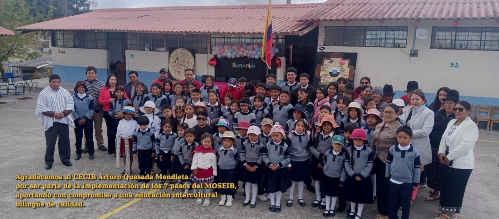

Provincias
Azuay, Cañar y Morona Santiago conforman el ámbito territorial de trabajo de la Zona 6.
Una trayectoria que transita de la docencia y la dirección institucional hacia el acompañamiento zonal, manteniendo como eje la mejora de la educación intercultural bilingüe.
Desempeño sostenido en educación, con experiencia pedagógica, didáctica y curricular. Durante este periodo también ejerció funciones de dirección en instituciones educativas.
Experiencia en conducción de procesos educativos, organización institucional, trabajo con equipos docentes y toma de decisiones orientada al cumplimiento de objetivos pedagógicos.
Acompaña a instituciones educativas de Azuay, Cañar y Morona Santiago y coordina acciones de gestión y pedagogía en Educación Intercultural Bilingüe.
Profundiza su formación en gestión, liderazgo y mejora institucional para articular experiencia, análisis y toma de decisiones.

PedagogíaDidácticaCurrículoGestión educativaLiderazgoAcompañamiento institucional
La función combina gestión, seguimiento y acompañamiento pedagógico. El trabajo territorial permite conocer de manera directa las necesidades de las instituciones y orientar acciones con directivos, docentes y equipos de apoyo.
Azuay, Cañar y Morona Santiago conforman el ámbito territorial de trabajo de la Zona 6.
Seis coordinadores pedagógicos, una analista y tres integrantes del equipo técnico pedagógico.
Seguimiento y acompañamiento relacionado con los currículos Kichwa y Shuar.
Organización del trabajo con coordinadores pedagógicos, analista y equipo técnico para distribuir responsabilidades, compartir información y dar seguimiento a las instituciones.
Uso de visitas, observaciones, reuniones y registros para identificar necesidades y acordar acciones concretas de mejora pedagógica y de gestión.
Contacto directo con directivos, docentes y comunidades para que las orientaciones zonales respondan a contextos reales y no únicamente a reportes administrativos.